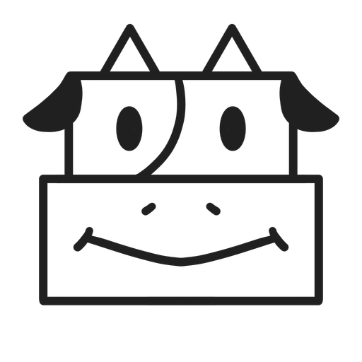
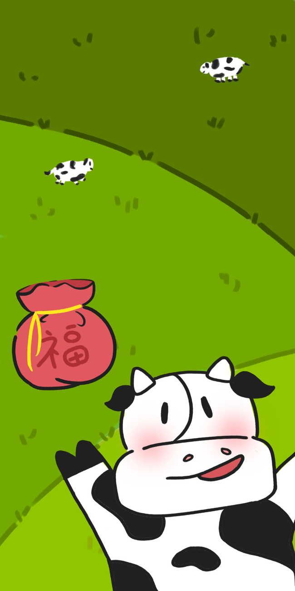
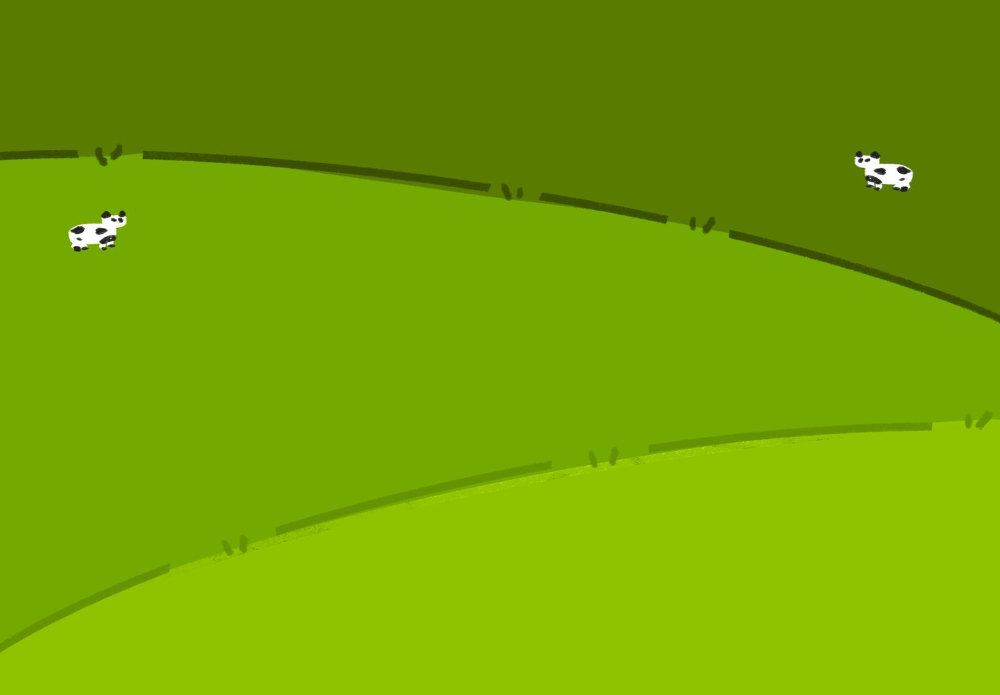

哞福利 現行前端樣式指南
從 origin/web（commit fea6111）的 web/src 逐一擷取，作為重做前的樣式紀錄。範例使用原本的 Tailwind class 重現，可直接複製。
範例需連網載入 Tailwind 4 與 Iconify；離線時展開每個範例下方的「原始 class」即可看到完整寫法。
技術棧
| 類別 | 使用 | 備註 |
|---|---|---|
| 框架 | Vue 3.5（<script setup> + TS）、Vite 7、vue-router 4 | unplugin-auto-import 自動引入 vue / vue-router API |
| 樣式 | Tailwind CSS 4（@tailwindcss/vite，用 @theme 定義顏色） | 沒有 tailwind.config；少量 scoped CSS（捲軸、轉場、el 元件覆寫）；有裝 sass 但幾乎沒用 |
| UI 元件庫 | Element Plus 2.13（unplugin-vue-components 自動引入） | 只用到 select / option / dialog / dropdown / input / skeleton / switch / collapse / ElMessage / ElMessageBox；其餘都是手刻 Tailwind |
| 圖示 | @iconify/vue 的 <Icon icon="..."> | 主力 mingcute，其餘 mdi、line-md、logos、simple-icons、uil、ph、majesticons |
| 狀態 | Pinia 3 + pinia-plugin-persistedstate | stores：user / family / welfare / chat |
| 其他 | marked + DOMPurify（AI 回覆 Markdown）、qrcode + jsqr（家庭邀請 QR）、@line/liff、axios | Google Analytics G-EZWHKPKERC |
| 字型 | 無自訂字型，使用系統預設 sans（Tailwind 預設 font stack） | lang="zh-TW" |
品牌與素材
品牌角色是手繪風的乳牛「阿哞」，主色為檸檬綠。素材已另存到 mouwelfale/assets/（線上原檔在 storage.googleapis.com/mou-welfare/web/ 與 web/public/）。




色彩
1. 主題 Token（main.css @theme）
2. Element Plus 主色覆寫（main.css html body）
3. 程式碼中寫死的顏色（依出現次數）
・#92C700（mygreen）— Header、登入按鈕、福利卡、篩選列、詳情頁
・#84CC16（Tailwind lime-500，以 bg-[#84cc16] 寫死 55 次）— 聊天室、個人設定、編輯資料、註冊資料、家庭對話框、FAQ
・#5A8700（Element Plus primary）— el-select、el-dialog、el-switch 等元件的焦點 / 選中色
Hover 色也各自不同：#7DAB00、hover:bg-green-500、hover:bg-[#497606]、active:bg-green-700。
4. 中性色用法（Tailwind gray）
| 用途 | class | 次數 |
|---|---|---|
| 標題 / 主要文字 | text-gray-800（大標偶爾 text-gray-900） | 62 / 27 |
| 內文 | text-gray-600、text-gray-700 | 49 / 30 |
| 次要文字 / 說明 | text-gray-500 | 57 |
| 輔助、圖示、placeholder | text-gray-400（最常用的文字色） | 90 |
| 停用、空狀態圖示 | text-gray-300 | 15 |
| 邊框 | border-gray-100（卡片）、border-gray-200（輸入框、次要按鈕） | 55 / 40 |
| 底色 | bg-white（卡片）、bg-gray-50（頁面 / hover / 聊天背景）、bg-gray-100 | 67 / 44 / 17 |
| 錯誤文字 | text-red-500 | 30 |
語意色（資格燈號 / 身分標籤）
資格燈號（WelfareMatchingService 的 GREEN / YELLOW / RED）
身分標籤顏色（composables/useTagColor.ts）
| 分組 | Token | 身分 |
|---|---|---|
| 年齡 | bg-myorange #FF9538 | 20歲以下、20歲-65歲、65歲以上 |
| 性別 | bg-myblue #3A90E0 | 男性、女性 |
| 經濟 | bg-mypurple #E360DA | 中低收入戶、低收入戶 |
| 特殊身分 | bg-myblue-green #00D3A9 | 榮民、身心障礙者、原住民、外籍配偶家庭 |
福利種類（後端白名單）：兒童及青少年福利、婦女與幼兒福利、老人福利、社會救助福利、身心障礙福利、其他福利。前端顯示為 # 類別 的灰框標籤，不另外上色。
字體排印
字重非常偏重：font-bold 用了 184 次，font-medium 30 次，幾乎沒有 regular 的標題。
福利詳情大標題
圓角、陰影、邊框
| 圓角 | 次數 | 用在 |
|---|---|---|
| rounded-full | 101 | 主要按鈕（pill）、頭像、狀態點、chip、圓形圖示按鈕 |
| rounded-xl | 42 | 下拉選單、對話框按鈕、RAG 來源卡、條件列 |
| rounded-lg | 26 | 輸入框、類別標籤、小按鈕 |
| rounded-2xl | 24 | 卡片（家庭卡、資格卡、選單列表）、聊天泡泡、登入卡 |
| rounded-3xl | 6 | 大型內容卡（詳情主卡、AI 摘要）、浮動聊天視窗 |
| rounded | 6 | 身分標籤 |
預設卡片（47 次）
hover 狀態
下拉選單
登入卡、浮動聊天
詳情內容卡
家庭卡（hover 6%）
聊天 FAB
手機「前往申辦」
版面與斷點
| 項目 | 規格 |
|---|---|
| 斷點 | 只用 md（768px）切換手機 / 桌機；少數 sm、lg。手機優先（LIFF 為主要入口） |
| 主容器 | max-w-7xl mx-auto，桌機 md:p-6；手機底部預留 pb-24 給導航 |
| 閱讀寬度 | 詳情頁 max-w-4xl；FAQ md:max-w-3xl；登入卡 max-w-3xl（左 42% 插畫，手機隱藏）、最小高 480px |
| 桌機 Header | bg-mygreen sticky top-0 z-50 h-16，左 Logo、中間文字連結（首頁 / 常見問題 / 用戶，選中為白色底線）、右側使用者下拉或白底綠字「登入」pill |
| 手機底部導航 | 固定底部、白底、上邊框 gray-100，高 calc(3.8rem + safe-area)；三個按鈕：阿哞（牛臉圖）、首頁、用戶；選中 text-mygreen、未選 gray-400；文字 10px |
| 手機頂列 | 各頁自己做：sticky top-0 h-14 bg-white border-b shadow-sm，左返回、中標題、右側動作或 w-8 佔位；詳情頁用 bg-white/80 backdrop-blur-md |
| 首頁搜尋列 | 手機綠底（bg-mygreen）、桌機白底，搜尋框 + 收藏 + FAQ 圖示 |
| Safe area | pb-[env(safe-area-inset-bottom)]；底部導航加 translateZ(0) 修 LIFF 捲動問題 |
| z-index | Header / 底部導航 50、篩選列 40、下拉 50、浮動聊天 40、FAB 50、tooltip 20、特例 60 |
按鈕
表單
帳號或密碼錯誤
生日用三個 el-select size="large"（年 flex-1、月 / 日 flex-[0.6]）；城市用 el-select clearable。
桃園市 基隆市 臺北市
標籤與 Pill
卡片
中低收入老人生活津貼
中低收入老人生活津貼
開啟原始公告王小明
符合資格王媽媽
資格不符資格不符：需具備「中低收入戶」身份
尚未加入任何家庭
建立或加入家庭，一起管理福利資訊
登入
聊天介面（阿哞）
阿哞 AI 助理
送出鈕停用時為 bg-gray-200 text-gray-400 cursor-not-allowed。RAG 來源卡外框：GREEN border-green-300（標「高度符合」）、YELLOW border-yellow-300（「部分符合」）、其他 border-gray-200（「參考資料」）；圓點為 green-500 / yellow-400 / red-400。
有福利問題？問問阿哞！
導航
回饋狀態
| 情境 | 做法 |
|---|---|
| Toast | ElMessage.success / error（51 處）。文案例：「加入收藏成功！」「已取消收藏」「操作失敗，請稍後再試」「連結已複製到剪貼簿」 |
| 確認 | 多數用自製 el-dialog width="90%" class="max-w-sm rounded-xl" align-center（取消 + 紅色確定）；少數 ElMessageBox.confirm |
| 載入中 | Iconify line-md:loading-loop（13 處）＋「努力載入中...」；登入頁按鈕文字改「登入中...」；OAuth 頁 border-4 border-mygreen border-t-transparent animate-spin；FAQ 用 el-skeleton |
| 列表結尾 / 空 | 「已經到底囉」、「找不到相關福利」（mdi:package-variant-closed）、「目前暫無常見問題資訊」（mingcute:inbox-line） |
| 錯誤 | 表單下方 text-red-500 text-xs text-center |
動態效果
| 名稱 | 定義 | 用在 |
|---|---|---|
| slide-up | all .3s cubic-bezier(0.34, 1.56, 0.64, 1)；from opacity:0; translateY(20px) scale(.95)（帶回彈） | 浮動聊天視窗、聊天內的家庭 / 歷史面板 |
| fade | opacity .3s ease | FAB 提示泡泡 |
| scale | transform .2s ease，from scale(0) | FAB 圖示切換 |
| 按壓 | active:scale-95（收藏心形 active:scale-75） | 按鈕 |
| Hover | hover:scale-110、transition-colors、卡片 hover:shadow-md、標題 group-hover:text-mygreen | 圖示、卡片 |
| 下拉箭頭 | transition-transform duration-300 rotate-180 | 篩選列、原文展開 |
| 持續動畫 | animate-pulse（在線綠點）、animate-bounce 三點錯開 0.1s（打字中）、animate-spin | 聊天、載入 |
| animate-fade-in-down | fadeInDown .2s ease-out（scoped CSS 自訂；同檔另有未使用的 slideDown） | 篩選下拉 |
圖示
以 Iconify 的 MingCute（line 風格）為主，另混用 mdi（愛心、登入登出）、line-md（載入動畫）、logos / simple-icons（Google / LINE）、uil:share、ph / majesticons（底部導航）。以下為實際用到的圖示：
重做時建議統一的地方
| # | 現況 | 建議 |
|---|---|---|
| 1 | 主綠三套（#92C700 / #84CC16 / #5A8700）＋多種 hover 色 | 定義一組完整色階（50–900），Tailwind 與元件庫共用同一份 token，禁止 bg-[#hex] |
| 2 | 燈號色三套（品牌色 / Tailwind 色 / RAG 卡） | 建立 success / warning / danger 語意 token，燈號元件化（Dot、Pill、Avatar ring） |
| 3 | 身分標籤白字對比不足 | 改淺底深字（如 bg-orange-50 text-orange-700）或加深底色 |
| 4 | 按鈕、對話框、手機頂列、空狀態在每頁重寫一次 | 抽成 Button / Dialog / PageHeader / EmptyState 元件 |
| 5 | Element Plus 只用了一小部分，大多數 UI 手刻 | 二選一：全面用元件庫並客製主題，或拿掉 EP 改用 headless（如 Reka UI）＋自有元件 |
| 6 | 四個頁面在 Layout 外，自己補 Header | 所有內頁統一進 Layout，用路由 meta 控制是否顯示導航 |
| 7 | 頭像 / Logo 用 4–5 MB 的 2048px 原圖 | 輸出 64 / 128 / 256px WebP |
| 8 | viewport 禁止縮放；篩選列、福利卡等少數可點元素用 div @click、圖示直接掛 @click | 靠 16px 輸入字級避免 iOS 放大即可，移除 user-scalable=no；可點元素一律用 <button> |
| 9 | 標題中英混雜（Sign up / Register） | 統一中文文案，登入頁標題改「登入」 |
| 10 | 沒有深色模式、沒有自訂字型 | 若要做，先把顏色全部 token 化；字型可考慮 Noto Sans TC / 圓體搭配手繪風品牌 |